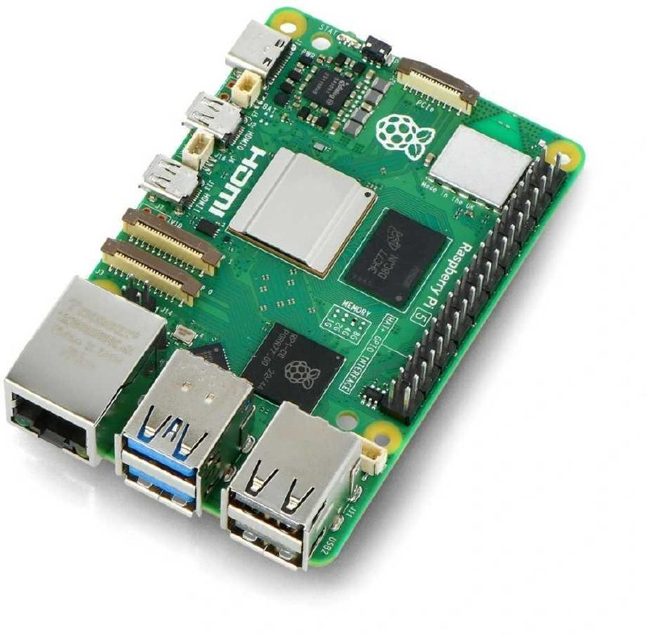

Raspberry Pi 5 8GB
Raspberry Pi 5 8GB — это одноплатный компьютер Raspberry Pi пятого поколения с 8 ГБ оперативной памяти. Подходит для учебных, мультимедийных, сетевых и встраиваемых проектов.


Документация
Характеристики
Подробнее
Raspberry Pi 5 — флагманская плата Raspberry Pi на SoC BCM2712, рассчитанная на полноценную работу под Linux и подключение периферии через стандартные интерфейсы. Версия 8GB отличается объёмом памяти LPDDR4X 8 ГБ и одинаковой с другими вариантами Raspberry Pi 5 аппаратной платформой. Плата оснащена двумя micro-HDMI, двумя USB 3.0, двумя USB 2.0, гигабитным Ethernet, двухдиапазонным Wi‑Fi и Bluetooth 5. Для питания требуется USB-C источник 5 В с током до 5 А; производитель указывает 25 Вт как целевой режим для полной конфигурации. На плате также есть 40-контактный GPIO, PCIe FFC-разъём, разъёмы для камер/дисплеев, RTC и вентиляторный коннектор.